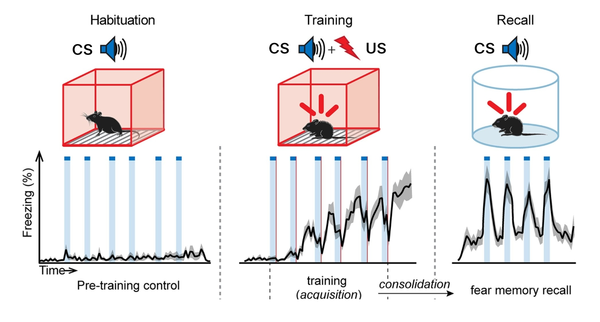

Neuroscience of social-cognitive enhancement for well-being and Neural bases of decision processes
Module 1 - Emotion, Motivation & Stress
Raffaele M Mazziotti, PhD
University of Florence
A core problem
At any moment, the brain faces multiple possibilities. It must decide:
- What is important
- What can be ignored
- What requires action
Emotion and motivation solve this problem.
Emotion and motivation are tightly linked. Both contribute to:
Prioritizing information
Biasing decisions
Driving behavior
A functional definition of emotion
Emotion can be defined as:
A coordinated brain-body state that assigns value to a situation and prepares action. The terms emotion and feeling are often used interchangeably. In neuroscience, they refer to related but distinct processes.
Emotions are objective physiological and neural states.
- Brain
circuits
- Bodily
responses
- Action tendencies
- Occur without conscious awareness
Feelings are the subjective experience of emotional states. They reflect:
- Awareness of bodily changes
- Cognitive
interpretation
- Context and memory
- Require
consciousness
A functional definition of emotion
Emotional responses are generated subcortically.
Feelings depend more strongly on cortical processing.
Emotions typically occur first. Feelings emerge later, if at all.
You can have:
- Emotions without feelings
- But not feelings without emotions
This distinction explains why:
- We can react before we know why
- Emotional behavior can precede awareness
- Regulation can target feelings but not initial emotional responses
The brain acts before the mind explains.
Brain networks for emotion and feeling
There is no single “emotion center”.
Several brain regions are consistently involved in emotion-related processes:
Amygdala
Hypothalamus
Brainstem nuclei
Insular cortexPrefrontal cortex
Each contributes a specific computation.
Brain networks for emotion and feeling
Subcortical regions contribute to rapid and automatic responses.
They are involved in:
Detecting relevance
- Generating
physiological changes
- Initiating
action tendencies
These processes can occur without awareness.
Cortical regions contribute to:
Interpretation of emotional states
Contextual modulation
- Regulation and
control
Subjective experience
They shape how emotions are experienced as feelings.
A closer look: the amygdala
The amygdala is a key structure in emotional processing (generally fear). It is located in the medial temporal lobe. It is involved in detecting biologically relevant stimuli.
The amygdala contributes to:
- Rapid
evaluation of relevance
Detection of potential threat
Assigning emotional significance
It responds to both positive and negative stimuli. Amygdala responses are fast. They can occur before detailed cortical analysis.
Through its connections, the amygdala can:
- Influence
autonomic responses
- Bias
attention toward relevant stimuli
- Modulate
memory formation
A closer look: the amygdala
The amygdala is required for acquiring fear memories a process called fear conditioning.
Fear conditioning is a form of associative learning: It allows the organism to learn that a neutral stimulus predicts danger.
In a typical fear conditioning experiment:
- A
neutral stimulus is presented
- An
aversive stimulus follows
After repeated pairings, the neutral stimulus alone elicits a fear response.
The amygdala integrates:
Sensory information about the neutral stimulus
- Information about the
aversive outcome
A key distinction:
- The amygdala is required for
acquiring fear memories
- It is also required for
expressing conditioned fear
Damage to the amygdala disrupts both.
A closer look: the amygdala
Fear conditioning can occur in two main forms:
Cued fear conditioning
Contextual fear conditioning
Fear conditioning relies on the association between:
Conditioned Stimulus (CS)
A previously neutral stimulus, such as a tone, a light or the context
Unconditioned Stimulus (US)
An inherently aversive stimulus, such as a mild foot shock
Cued fear conditioning procedure:
Training phase
- The animal is placed in a familiar chamber
- A CS (e.g. tone) is presented
- The CS is paired with a US
During the test phase
- The tone is presented alone
- Often in a ‘different context’
If learning occurred, the CS alone elicits fear responses.
A closer look: the amygdala

A closer look: the Prefrontal Cortex
Emotional responses are not fixed. They can be shaped, modulated, and regulated. A key role in this process is played by the prefrontal cortex.
Emotion regulation refers to processes that:
Modify emotional responses
Adjust their intensity or duration
Align emotions with goals and context
Regulation does not mean suppression.
A closer look: the Prefrontal Cortex
Different prefrontal subregions contribute differently:
Ventrolateral prefrontal cortex
Value, emotional meaning, safety
Dorsolateral prefrontal cortex
Cognitive control and reappraisal
Orbitofrontal cortex
Outcome evaluation and updating
One key regulatory strategy is reappraisal. Reappraisal involves:
- Changing how a situation is interpreted
- Altering emotional impact
This strategy strongly recruits prefrontal regions.
Prefrontal cortex regulates emotion through top-down control.
It can influence:
- Amygdala activity
- Autonomic responses
- Behavioral expression
A closer look: the Prefrontal Cortex
The prefrontal cortex matures slowly. Its structural and functional development continues beyond 20 years of age. This maturation timeline has important behavioral consequences.
During adolescence:
- Subcortical emotion-related systems are largely matured
- Emotional reactivity is strong
- Prefrontal regulatory systems are still developing
Emotion generation is functional, regulation is not yet fully mature.
This creates a temporary imbalance:
Strong emotional and motivational signals
Weaker top-down regulatory control
This imbalance contributes to increased emotional intensity and risk-taking.
A closer look: the Prefrontal Cortex
Fear learning is not permanent and inflexible. Fear responses can be reduced when the threat is no longer present. This process is called fear extinction.
During extinction:
- The conditioned stimulus (CS) is presented repeatedly
- The unconditioned stimulus (US) is omitted
Over time, fear responses decrease. Extinction is a new form of learning.
Extinction does not erase the original fear memory. The CS-US association remains stored. Fear expression is modulated, not deleted.
Fear responses can reappear:
- After time has passed
- In a different context
- After stress
This shows that the original memory persists.
A closer look: the Prefrontal Cortex
During extinction:
- Prefrontal cortex activity increases
- Amygdala-driven fear responses decrease
This reflects top-down inhibitory control. In rodents, extinction depends strongly on the infralimbic cortex. The infralimbic cortex is considered homologous to ventromedial prefrontal regions in humans.
A functional definition of motivation
Motivation is the inner drive that initiates, guides, and sustains goal-directed behavior Motivation refers to processes that:
- Direct action toward goals
- Sustain effort over time
Motivation answers the question:
Why act at all?
Emotion and motivation interact
Together, they determine:
- What is pursued
- What is avoided
- How strongly we act
Emotional value influences motivation. Motivational state shapes emotional responses.
Neural systems for motivation
A key distinction:
These processes can be dissociated.
Motivation depends on interactions between:
Cortical decision and control regions (Wanting)Subcortical reward-related systems (Liking)
These systems bias action selection.
Dopamine plays a central role in motivation.
It is involved in:
- Learning from outcomes
- Predicting future rewards
Dopamine signals are not simple pleasure signals.
Two major dopaminergic pathways:
Mesolimbic pathway: Involved in reward prediction and reinforcement
Mesocortical pathway: Involved in decision-making, cognitive control, and goal maintenance
Neural systems for motivation

Reward prediction
Motivational signals influence:
- Basal nuclei and motor planning areas
- Decision-making circuits
They bias which actions are selected and executed.
Dopamine neurons respond to:
- Unexpected rewards
- Cues that predict rewards
Over learning, activity shifts from outcome to predictor.
This supports adaptive behavior.
Reward prediction error
Dopamine neurons do not simply respond to rewards. They signal whether outcomes are better or worse than expected. This signal is called a reward prediction error.
A reward prediction error reflects the difference between:
- Expected outcome
- Actual outcome
This signal is used to update future behavior. Prediction error signals:
Update value representationsBias future choices
Dopamine activity reflects prediction error:
Reward is better than expected: dopamine activity increases
Reward is as expected: little or no change
Reward is worse than expected or omitted: dopamine activity decreases
Learning occurs when expectations are violated. Over learning:
- Dopamine responses shift from reward to predictive cues
- The brain learns what predicts valuable outcomes
This supports adaptive, flexible behavior.
Reward prediction error

What is stress
Stress is not an emotion. Stress is a physiological response to challenge or threat. It prepares the organism to cope with demands.
Stress refers to coordinated brain and body responses that:
- Mobilize energy
- Increase vigilance
- Promote adaptive action
Stress is adaptive by design.
The body responds to stress through 2 major systems:
- The
autonomic nervous system
- The hypothalamic–pituitary–adrenal (
HPA) axis
These systems operate on different time scales.
Autonomic responses Fast, neural, seconds
HPA axis responses Slower, hormonal, minutes to hours
Both are coordinated but serve different functions.
Autonomic responses in stress
During stress, the autonomic system (the sympathetic division) produces rapid effects:
- Increased heart rate
- Increased blood pressure
- Faster breathing
- Reduced digestion
These changes prepare the body for immediate action.
The HPA axis
The HPA axis is a hormonal stress response system. It links the brain to peripheral organs through endocrine signaling. It produces slower but longer-lasting effects than autonomic responses.
During stress:
- The
hypothalamus is activated (CRF)
- The
pituitary gland releases signaling hormones (ACTH)
- The
adrenal glands release glucocorticoids
This cascade is a loop.
Cortisol and energy mobilization
Glucocorticoids, such as cortisol:
- Increase
glucose availability
- Decrease sensitivity to pain
- Modify immune and metabolic activity
They prepare the body for prolonged challenge.
Brain control of the HPA axis
Stress responses differ in duration.
Acute stress: Short-term, adaptive, protective
Chronic stress: Prolonged, costly, potentially damaging
The difference lies in regulation, not intensity.
The HPA axis is regulated by the brain. Key contributors include:
- Amygdala
- Prefrontal cortex
- Hippocampus
Stress is not just peripheral.
Glucocorticoids act back on the brain. They signal when stress responses should be reduced. This negative feedback limits stress exposure.
If stress responses are not properly terminated:
- Hormone levels remain elevated
- Brain and body systems are altered
Chronic stress reflects dysregulation, not overreaction.
Brain control of the HPA axis